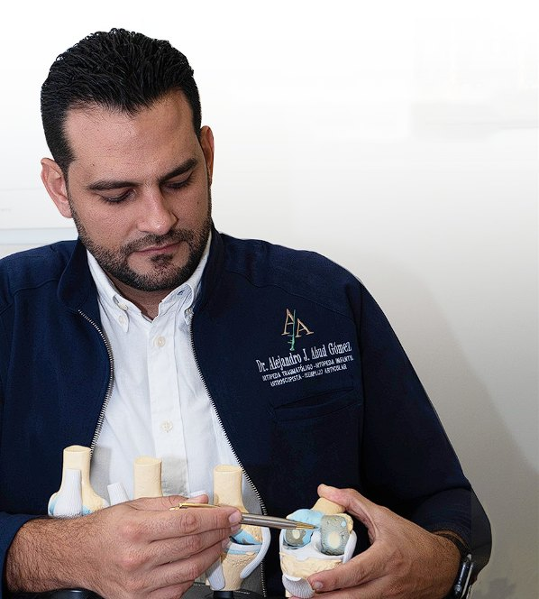

Ortopedia y traumatología
Dr. Alejandro J. Abud Gómez
Cirujano ortopeda y traumatólogo, artroscopista, con práctica en medicina regenerativa y endoscopia de columna vertebral. Atiende a adultos y a niños.
- Artroscopia
- Endoscopia de columna
- Terapia celular
- Reemplazo articular
- Traumatología
- Ortopedia infantil
Formación
- 2014–2017Posgrado en Ortopedia y Traumatología · Universidad Central del Este
- 2012–2014Residencia en Cirugía General · Centro Médico UCE
- 2005–2010Doctor en Medicina · Universidad Central del Este
Certificaciones y membresías por confirmar
Dónde atiende
- Bávaro · InnovacareHorario por confirmar
- San Pedro de MacorísDirección y horario por confirmar